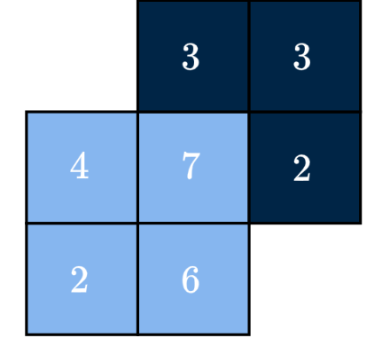
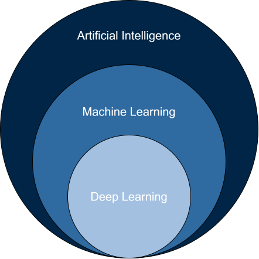
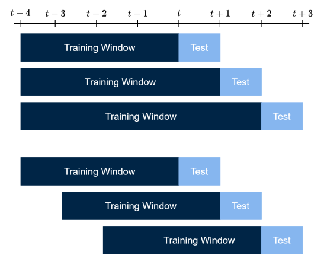

Forecasting with Machine Learning
2026-11-02
NumPy
Arrays, operations, subsetting, NaNs, random draws, lagging
pandas
Data frames, wrangling, time-indexed data
Machine learning
Definitions and scope
The forecasting pipeline
Data wrangling, model selection, evaluation
scikit-learn
OLS, LASSO, ridge, random forests
Python is the programming language used in this course.
NumPy Arrays and numerical tasks
pandas Data frames and wrangling
scikit-learn All non-deep-learning models
PyTorch Deep learning
Always import library with the standard alias,
arr\[ \texttt{arr}\in\mathbb{R},\quad \texttt{arr}\in\mathbb{R}^n,\quad \texttt{arr}\in\mathbb{R}^{n\times m},\quad \texttt{arr}\in\mathbb{R}^{m_1\times \cdots \times m_n} \]
Tip
If not quite confident in scalars, vectors, matrices, tensors, refer to the Maths Brush-Up.

arr[row, col]Zero-indexed, but the end of the interval is excluded
arrM[RowIdx, ColIdx] is wrong — it only selects three data points.
::2 \(\to\) every other index
Extract from arrM, every 4th column of rows 20 to 60 in increments of 3.
Adding a number of NaNs to arrM,
.copy() is required — otherwise it’s the same array, and the original receives NaNs too.
Determine whether NaNs are present and their count,
Replacing NaNs with values of your choice, e.g., 0 or the mean (for time series, compute the mean on training data only),
np.isnan(arrMNaN) identifies the NaNs.any(axis=1) — identifies any NaN in each row~ flips the selection to retain the clean rowsManipulating NaNs is dangerous — choose replacement values with care
A 1D array has shape (n,), but many functions expect a 2D array. Reshape it into a column vector with .reshape(-1, 1):
-1 in rows is a placeholder to let Python determine the number of rows, while 1 dictates one column
R’s (at the time) superior data handlingAlways import library with the standard alias,
The left-most column is the index; it can also be set afterwards with dfS.index=[...].
pd.read_csv() is an important function. We use ToyData.csv.
Also useful: df.describe(), df.isna().sum(), df.dropna().
Different than NumPy - use .iloc for integer-location based indexing, and .loc for label-based indexing
Subsetting by name alone (cannot subset rows simultaneously),
Conditions,
When done wrangling, write the data frame to file:
In the browser this only writes to a temporary file system — run it in your own Notebook to save.

Inspecting
Explore distributions, check for NaNs and outliers
Lagging
Construct predictors from past values only (time series forecasting only)
Splitting
Reserve the test set before touching the data further
Standardizing
Fit the scaler on train, apply to both data sets
Tuning
Cross-validate hyperparameters on the training set
Fitting
Fit the model on the training and validation sets
Evaluating
Compare models on the held-out test set
We distinguish between classification and regression, categorical and numerical targets
Classification
Regression
Before modelling always inspect the raw data.
R to Python is available in the Colab Notebook “Chapter III”Prediction \(Y_t \sim f(X_{t-1})\) — to avoid look-ahead bias we must lag the data.
shift(1) moves every value one row down, so row \(t\) holds the value of \(t-1\). The first row has no predecessor and becomes NaN.
dropna() removes the first row of X, so remove the first row of y too (y.iloc[1:]). Otherwise X and y are misaligned
In cross-sectional modelling, data is usually split randomly
In time series, data must be split chronologically
\(Z\)-score standardization: Subtract the mean, divide by the standard deviation:
\[ z_t = \frac{x_t - \hat{\mu}}{\hat{\sigma}} \]
Standardize
Standardization unnecessary
Fit the scaler on training data only, then apply to the test set. Fitting on the full sample leaks future distributional information.
fit_transform on the test set leaks future distributional information into the model
For out-of-sample evaluation across many periods:
Expanding window
Rolling window

The expected squared forecast error decomposes as
\[\mathrm{E}\!\left[(\hat{y} - y)^2\right] = \underbrace{\mathrm{Bias}^2}_{\text{underfitting}} + \underbrace{\mathrm{Variance}}_{\text{overfitting}} + \underbrace{\sigma^2}_{\text{irreducible}}\]
High bias
High variance
Models applying regularization, e.g., LASSO, ridge, and random forests, trade off bias for variance
Hyperparameters (e.g. \(\alpha\) in LASSO) must be selected to optimize out-of-sample performance
Never select hyperparameters by performance on the test set — this generates forward-looking bias
Standard approach: time-series cross-validation on the training set. Stylized code,
Primary modelling library covering a large array of models:
Advantage: unified and streamlined syntax — fit \(\to\) predict \(\to\) score
Generally import functions as needed, e.g.,
Importing from sklearn and not scikit-learn
Simulated data: stationary AR(1) features emulating weather data - Avoiding seasonality, ensuring each fold draws from the same distribution - Demand is a non-linear function of yesterday’s weather - 11 features contain signal, 14 are pure noise
Intuitive and interpretable; challenged by heteroskedasticity and serial correlation
\[\hat{\beta} = (X^\top X)^{-1} X^\top y\]
Implementation on previous slide follows the standard scikit-learn blueprint,
Initialize model object
ols = LinearRegression() assigns a linear regression object to ols
Fitting/training model
.fit(X_train, y_train) accepts the training covariates and target and fits/trains the model on this data
Predicting
.predict(X_test) uses the out-of-sample covariates to generate predictions of the target
Evaluating
mean_squared_error(y_test, y_pred_ols) compares the \(\hat{y}\) to the true values, \(y\)
The mean squared error is a common metric for model evaluation, but others exist as well
Compute the in-sample fitted values from ols and the training MSE. The relevant data and fitted model are stored in the memory already, so you can proceed from here.
\[\begin{aligned} \text{LASSO:}&\quad \hat\beta_{\text{LASSO}} &= \underset{\beta}{\arg\min} \sum_{t=1}^T(y_t - \hat{y}_t)^2 + \alpha \sum_{j=1}^p |\beta_j|\\ \text{Ridge:}&\quad \hat\beta_{\text{Ridge}} &= \underset{\beta}{\arg\min} \sum_{t=1}^T(y_t - \hat{y}_t)^2 + \lambda \sum_{j=1}^p \beta_j^2 \end{aligned}\]
Penalized regression models trade off bias for variance relative to OLS
The scaler is fitted before CV, so the validation folds influence it slightly
The idea is that LASSO will set irrelevant coefficients exactly to zero
Note: Random forests is scale equivariant — no standardization required
Forecasting with Machine Learning